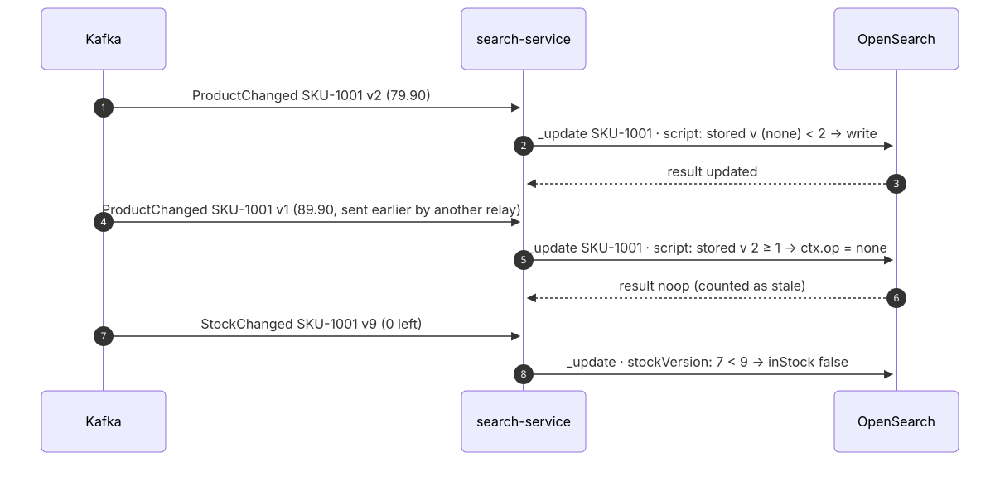
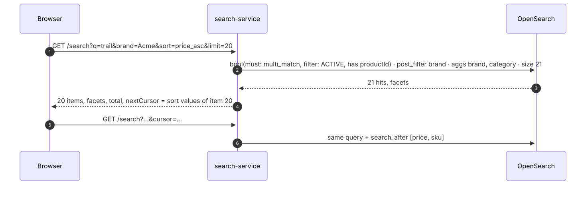

search-service: low-level design#
Part of the e-commerce system design. Animated version: walkthrough.
1. Responsibilities#
| Does | Does not |
|---|---|
| Keep a searchable copy of every product with its availability | Own product or stock data: the catalogue and inventory do |
| Answer full-text queries with filters, facets, sorting and cursor pages | Show drafts or archived products |
| Apply catalogue and stock events in any order, any number of times | Call other services: everything it needs arrives in events |
2. Guarantees#
| Guarantee | How |
|---|---|
| Out-of-order events never overwrite newer data | Each document stores catalogVersion and stockVersion. A painless scripted upsert applies a write only if its version is higher, otherwise the result is noop |
| No dedupe table needed | A repeated event carries a version that is not higher, so it is a no-op |
| Two sources, one document | Product and stock events touch different fields of the same document (id = SKU), each guarded by its own version. Plain version_type=external cannot do this: it allows only one version per document |
| A stock event before its product is not lost | It creates the document with stock fields only; queries require productId, so it stays hidden until the product arrives |
| No event skipped while OpenSearch is down | The Kafka error handler retries the same record with back-off (up to 30 s apart) without limit; the partition waits |
| Poison events do not block | Unreadable events go straight to <topic>.dlq |
| Stable pages | search_after with a tie-breaker on SKU: deep pages cost the same as the first, and no item appears twice |
3. Module diagram#

4. Interaction diagram#

5. Sequences#
A late event arrives#

Search with facets and a cursor#

6. Index design#
Mapping: products-v1.json (dynamic: strict).
| Field | Type | From |
|---|---|---|
productId, sku, category, brand, status, currency |
keyword | ProductChanged |
name (+ name.raw), description |
text, English analyser | ProductChanged |
price |
scaled_float × 100 | ProductChanged |
attributes |
flat_object | ProductChanged |
image |
keyword, not indexed | first image key |
updatedAt |
date | event occurredAt |
catalogVersion |
long | ProductChanged |
available, inStock, stockVersion |
integer, boolean, long | StockChanged |
Mapping changes: create products-v2, start a consumer group that replays both topics from the earliest offset into it, then
move the alias in one _aliases call. Readers and writers only ever use the alias.
7. Scaling and performance#
- Pods: stateless, 2–10 replicas; listener concurrency 3 per pod, up to the 12 partitions of each topic.
- Index: 3 shards, 1 replica, 1 s refresh: a change is searchable about a second after it is indexed.
- Queries: filters run in filter context (cached, not scored);
track_total_hitsgives exact counts for the facet UI. - Writes: one
_updateper event withretry_on_conflict=5, because product and stock writes for the same SKU can meet.
8. Failure handling#
| Failure | Behaviour |
|---|---|
| OpenSearch down | Search answers 503 SEARCH_UNAVAILABLE with Retry-After: 5; product pages still work from the catalogue. Indexing pauses and resumes from the same offset |
| OpenSearch down at start-up | The service does not start (the index and alias must exist before any write, or OpenSearch would create an index with a guessed mapping) |
| Unreadable event | Sent to <topic>.dlq at once; the partition moves on |
| Duplicate or late event | noop, counted in search_events_stale |
| Index lost | Rebuilt by replaying catalog.events (and its compacted mirror) and inventory.events |
9. Tests#
| Test | Kind | Proves |
|---|---|---|
SearchQueryTest |
domain | Defaults, limits, price range, sort parsing; no text means newest first |
EventParserTest |
adapter | Envelopes become documents and stock updates; other types skipped; malformed events marked for the DLQ |
IndexerTest |
application | Late and repeated events are dropped and counted |
HexagonalArchitectureTest |
ArchUnit | Layering |
SearchContainersIT |
OpenSearch + Kafka | Stock before product, product v2 before v1, stock 9 before 8: the newest data wins; brand facet still lists every brand while filtering; price range; five items in three cursor pages, sorted, no duplicates; invalid cursor 400; unreadable event on the DLQ |